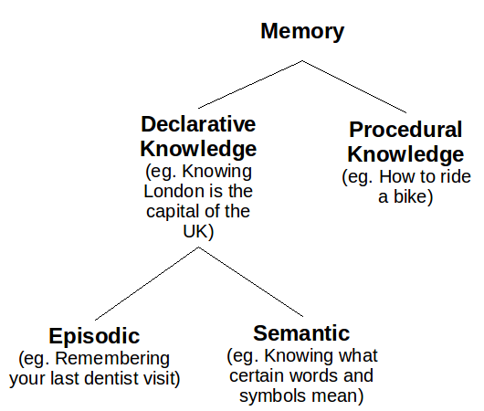
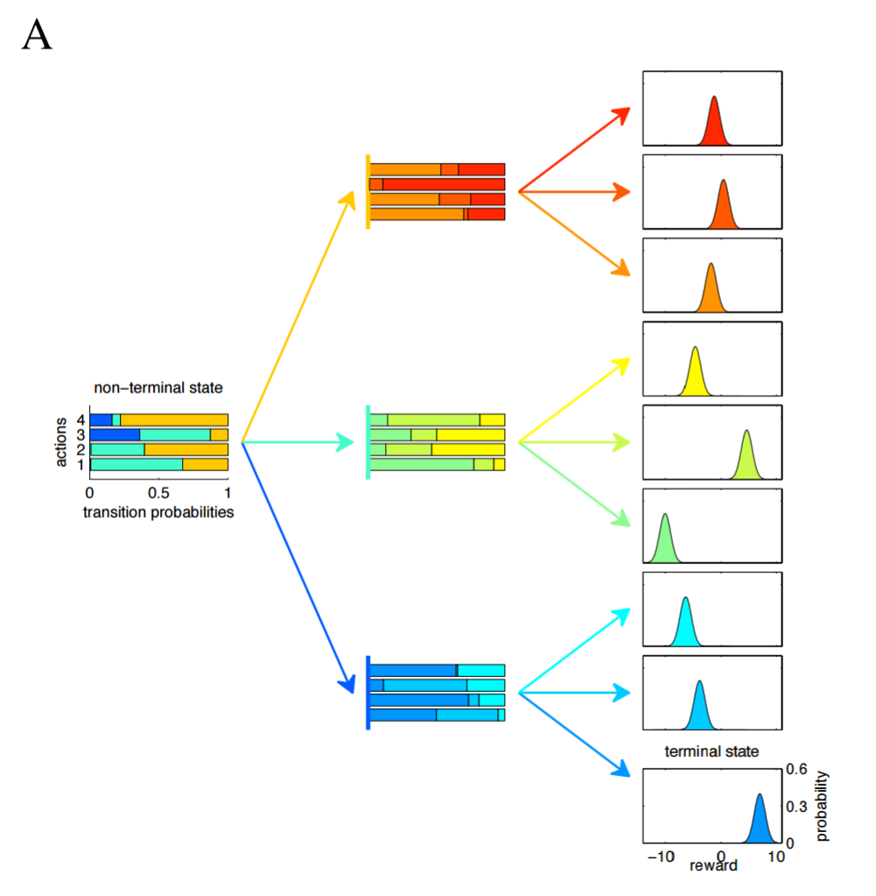

Motivation
Paper #1 - Hippocampal Contributions to Control (2007)
Understanding the motivation for Neural Episodic Control requires starting in the field of computational neuroscience. Our starting point might seem only distantly related, but I promise everything will tie together. Our story begins in 2007, when Lengyel and Dayan raised a question - why is having an episodic memory useful?
If you're a computer scientist like me, you might not immediately understand the question or its significance. But I promise you, the question is pretty interesting. Let's start with a quick overview of how human memory systems are structured.
Humans have two types of long-term memory: explicit (declarative) memory and implicit (procedural) memory. Explicit memory stores the recollections that you can intentionally bring to the front of your mind, and is further divided into two subcategories: episodic memory and semantic memory. Episodic memory contains specific personal experiences, including people, places, emotions, communicative exchanges - I like to think of episodic memory as little video clips that you can play in your head. This differs from semantic memory, which contains generalized understanding, such as knowing all the words to bohemian rhapsody or that human activity is a substantial causal factor towards climate change. Put another way, the question is asking, "Why do we remember specific memories in addition to remembering generalizable information?"
Lengyel and Dayan's hypothesis is that for agents trying to maximize long-term rewards in sequential decision-making problems, there's a tradeoff to be had: semantic memory makes better use of experiences (i.e. more efficient), but episodic memory requires fewer experiences (i.e. more accurate). They suggest that the two explicit memory systems exist because the systems supplement the others' deficiency; episodic memory can select good actions when data are scarce, and semantic memory can generalize well once more data have been collected.
To analyze this tradeoff, Lengyel and Dayan perform theoretical analysis on tree-structured Markov Decision Process (tMDPs). As the name implies, a tMDP is just a Markov Decision Process (MDP) without cycles. I couldn't find a simple picture of a tMDP, so I'm going to use the paper's psychadelic picture. In the below example tMDP, the agent takes two actions to complete an episode. The agent starts on the left, chooses one of four possible actions, and is then blown to a second state based on the transition probabilities, where the agent again chooses one of four possible actions and is then given a reward. We could succinctly describe this tMDP as having depth = 2, branching factor = 3 and number of actions = 4. The transition function and the reward function are both stochastic.
tMDPs are advantageous because they're more analytically tractable than MDPs and they're almost equivalent - think of a tMDP as a MDP unfolded in time. The authors compared the performance of three agents (or controllers, as they call them):
- Model-based controller without computational noise (theoretical upper limit on performance in a given environment)
- Model-based controller with computational noise (semantic memory)
- Model-free episodic controller (episodic memory)
The two model-based controllers select actions by constructing probability distributions for states and actions and then choosing actions from those distributions. For the first agent, to determine the upper limit on performance, the authors assume that the agent knows the exact distributions of the environment (i.e. the agent has seen an infinite number of samples). In contrast, the episodic agent selects actions by remembering which action for the current state led to the best outcome observed thus far.
Lengyel and Dayan reach two key results. First, as the variance $\eta_2$ of the action values increases, the model-based controller requires more data to perform as well, as show below. Here, "learning time" is defined as the number of times every state-action pair has been sampled.

Second, an episodic agent outperforms the semantic agent when data is limited, and the episodic agent holds its competitive edge for longer in more complex and more noisy environments. The following three images show the two agents' performance as the branching factor of the environment increase from 2 to 4.

Paper #2 - Model-Free Episodic Control (2016)
Lengyel and Dayan's results are significant because they suggest how human brains might solve a critical problem plaguing reinforcement learning and deep learning: the need for tremendousamounts of data. As Lake et al. (TODO: read this) points out, DeepMind's DQN superhuman performance at Atari 2600 games required a ridiculous amount of training: "The DQN was trained on 200 million frames from each of the games, which equates to approximately 924 hours of game time (about 38 days), or almost 500 times as much experience as the human received. Additionally, the DQN incorporates experience replay, where each of these frames is replayed approximately 8 more times on average over the course of learning."
DeepMind sought to test Lengyel and Dayan's insight by creating a more sophisticated version of the episodic agent, called Model-Free Episodic Controller (MFEC), and then observing how the algorithm performs in tougher environments. An MFEC agent maintains a growing table $Q^{EC}$, which is indexed by states and actions; each entry contains the highest reward ever received by taking action $a$ in state $s$. To mimic limits on memory retention, the table acts like a LRU cache, ejecting the oldest state-action pairs when it exceeds its storage capacity. The agent uses this table to choose an action $a_t$ from state $s_t$ by greedily selecting action $a_t = \argmax\limits_a Q^{EC}(s_t, a)$. At the end of the episode, every state-action-reward tuple, $Q^{EC}(s_t, a_t)$ is updated as follows:
However, agents using tabular methods like $Q^{EC}$ as described have no way to intelligently choose actions in newly encountered states. The authors point out that shortcoming can be overcome by assuming the state space $\mathcal{S}$ has a metric distance; as a consequence, k-nearest-neighbors can be used to choose actions by looking at the best actions in similar states. Formally, we can extend state, then $Q^{EC}(s, a)$ can be estimated as follows:
Before testing an MFEC agent, the authors needed to take one additional step. Prior work (TODO: read this) demonstrated that the hippocampus, the brain region largely responsible for episodic memory, doesn't operates on sensory data directly, but rather a representation of that data. Similarly, rather than allowing the agent to interact directly with the environment, the authors tried using two types of representations (also known as feature mappings) $\phi$. Thus, for observation $o_t$, the agent's state $s_t = \phi(o_t)$.
The authors tried two different feature mappings. The first mapping is a random project of the original observation into a smaller dimensional space (Model-Free Episodic Controller Random Projection, or MFEC-RP for short). This is accomplished using the Johnson-Lindenstrauss lemma (TODO: learn this), which states that for a random matrix $\mathbf{A}$ with entries drawn from a standard Gaussian, a transformation $\phi : o \rightarrow \mathbf{A} o$ will approximately preserve relative distances in the original space. The second mapping uses a variational autoencoder (Model-Free Episodic Controller Variational Autoencoder, or MFEC-VAE for short).
The two flavors of MFEC were tested on five Atari-2600 games, and on three tasks (Forage, Forage & Avoid, Double T-Maze) in a first-person 3-D environment called Labyrinth. The results are below, and the results are quite clear: MFEC agents outperform previous champions DQN, Prioritized DQN and A3C in limited-data domains (usually < 20 million frames).

Intuition
Neural Episodic Control begins by recapping why MFEC outperforms DQN and A3C. Three reasons are offered:
- Stochastic gradient descent requires small learning rates to converge
- Environments with sparse reward signals cause neural networks to poorly predict rewards
- Reward propagation techniques like Q-learning slow the spread of reward signal
The paper introduces an improved version of MFEC called Neural Episodic Control (NEC) with two key modifications. First, rather than using variational autoencoders or a random projection, Pritzel et a. suggest using a convolutional neural network (CNN) that can learn an embedding well suited for subsequently selecting actions. Second, they replace the $Q^{EC}$ table with a more sophisticated alternative called Differentiable Neural Dictionaries (DNDs). DNDs are very similar to associative arrays (e.g. hashmaps, dictionaries), but modified to be differentiable. With these two modifications, the algorithm becomes entirely differentiable and thus end-to-end trainable by gradient descent.
Mathematics
Differential Neural Dictionaries
Like a Python dictionary, a DND is composed of keys $K_a$ and corresponding values $V_a$, and two operations are possible: lookup and write. The keys and values are indexed by $a$ because NEC uses one DND for each action $a \in \mathcal{A}$. The paper uses $h$ to denote a key because $k$ will later be used to refer to a kernel function (more on that later). To find the value corresponding to $h$, $o$, the DND makes use of a distance metric like $Q^{EC}$, but in a more sophisticated manner. The output $o$ will be a weighted sum of values in the DND, where the weighting coefficients are determined by the similarity of $h$ to the keys in the DND. Specifically, for queried key $h$ and for each key-value pair $(h_i, v_i)$ currently in the DND:
The output $o$ is then a linear combination of the values multiplied by their corresponding weights:
The authors choose a kernel based on the reciprocal of L2 distance. The difference is that a constant $\delta$ is added to the denominator; the consequence is that (apart from making the function continuous when $h$ equals $h_i$) the tails are heavier, so weight isn't overwhelmingly allocated to the nearest neighbor when all neighbors are far away.
To make queries scalable, the output of a lookup will be based on the key's p-nearest neighbors, and kd-trees are used to approximate said nearest neighbors. In the lookup illustration below, the CNN produces some state representation $s$, which is the blue vertical bar on the left. That state $s$ is then compared against other states already in the DND, which is the two-column table in the middle. My best guess is that the illustrator is implicitly considering only the 5 nearest neighbors, and is representing the scalar weights using greyscale; the weights are then multipled by the values and subsequently summed to produce the output.

Once a key is queried from a DND, that key and its corresponding output are appended to the DND, or, if the key already exists in the DND, the previous value is overwritten with the output.

Remember, a DND exists for each action $a \in \mathcal{A}$. Keeping that in mind, the image below shows NEC using one DND; in practice, the output of the CNN would be fed in as input to multiple DNDs ($|\mathcal{A}|$ DNDs, to be, and the NEC agent would select the action with the highest $Q(s,a)$ value.

DND Stored Value
Thus far, I haven't mentioned what values are stored in the NEC agent's DNDs.
Experiments and Results
As the table below shows, NEC usually outperforms MFEC

Discussion
Unfortunately, the authors don't compare NEC to MFEC augmented with its own CNN, so ambiguity surrounds how much of NEC's improved performance is due to a superior representation (through the CNN) as opposed to using DNDs in place of $Q^{EC}$.
Summary
Notes
I appreciate any and all feedback. If I've made an error or if you have a suggestion, you can email me or comment on the Reddit or HackerNews threads.